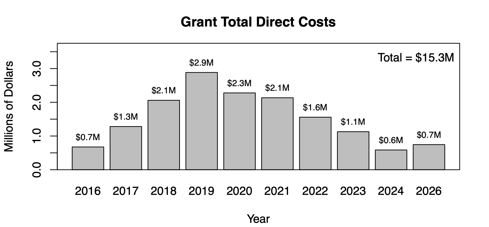

Grant Support
Funding Impact

Current Support
- NIH R01AR085049. The role of dynamic joint stability in generalized joint hypermobility.
Total Direct Costs: $2,070,394. Dates: Sep 2026 to Aug 2031. Role: Co-Investigator. - NIH T32DA050560. Training in genetic and neurobehavioral mechanisms of addiction.
Total Direct Costs: $1,597,610. Dates: July 2026 to May 2031. Role: Co-Investigator and Mentor.
Completed Support
Personalized Medicine / Adaptive Assessment- NIH R01EY030890. Remapping the visual field to aid reading with central scooters.
Total Direct Costs: $1,345,583. Dates: July 2020 to May 2025. Role: Co-Investigator. - NIH R01MH115046. Parsing early emerging heterogeneity related to autism spectrum disorder.
Total Direct Costs: $2,494,039. Dates: Mar 2019 to Dec 2024. Role: Co-Investigator. - NIH R43AG074740. Interactive software for assessing meaningful aging.
Total Direct Costs: $376,278. Dates: Sep 2021 to Aug 2023. Role: Co-Investigator
- NIH T32DA050560. Training in genetic and neurobehavioral mechanisms of addiction.
Total Direct Costs: $1,516,210. Dates: July 2020 to May 2025. Role: Co-Investigator and Mentor. - NIH U01DA046413. A twin study of adolescent alcohol and drug use development.
Total Direct Costs: $1,705,000. Dates: Aug 2018 to June 2023. Role: Co-Investigator. - NIH R21AA026919. Neural outcomes of moderating alcohol use in early adulthood.
Total Direct Costs: $477,289. Dates: June 2019 to May 2021. Role: Co-Investigator.
- NIH R01MH112583. Perceptual mechanisms of visual hallucinations and illusions in psychosis.
Total Direct Costs: $1,972,575. Dates: July 2017 to June 2022. Role: Co-Investigator. - NIH U01MH108150. Neural disconnection and errant visual perception in psychotic psychopathology.
Total Direct Costs: $3,326,714. Dates: August 2016 to July 2020. Role: Consultant. - NIH F32MH112334. Investigating the role of cerebellar abnormalities in ... individuals with schizophrenia.
Total Direct Costs: $408,365. Dates: July 2017 to June 2020. Role: Consultant
- NIH R03HD097715. Intersegmental dynamic mechanisms of neck pain In vivo.
Total Direct Costs: $300,000. Dates: June 2019 to May 2021. Role: Co-Investigator. - UMN IEM-A142016. Advancing translational musculoskeletal movement research towards ...
Total Direct Costs: $75,000. Dates: January 2017 to January 2018. Role: Co-Investigator.